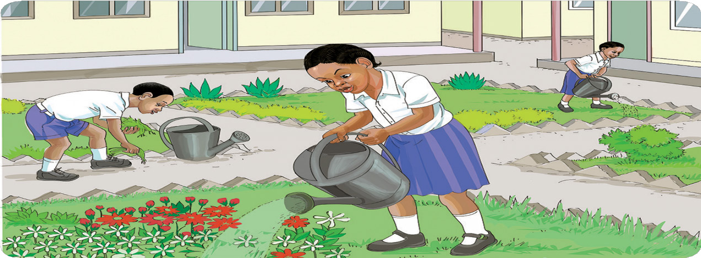

Sura ya Tisa
Kusoma kwa ufasaha
Kusoma habari
Soma habari hii kwa haraka na kwa usahihi/ tumia lugha ya alama kusoma habari hii kwa usahihi:
Bustani ya maua

Ng’aida anasoma darasa la pili. Shule yao ina bustani ya maua. Bustani ina maua meupe, mekundu na kijani. Maua hayo huweza kuuzwa kwa bei kubwa.
Ng’aida na wanafunzi wenzake humwagilia maua kila siku. Ng’aida amejifunza namna ya kutunza bustani ya maua. Amepanda maua nyumbani kwao. Amemfundisha mama yake kutunza bustani ya maua. Nyumba yao inapendeza.
71